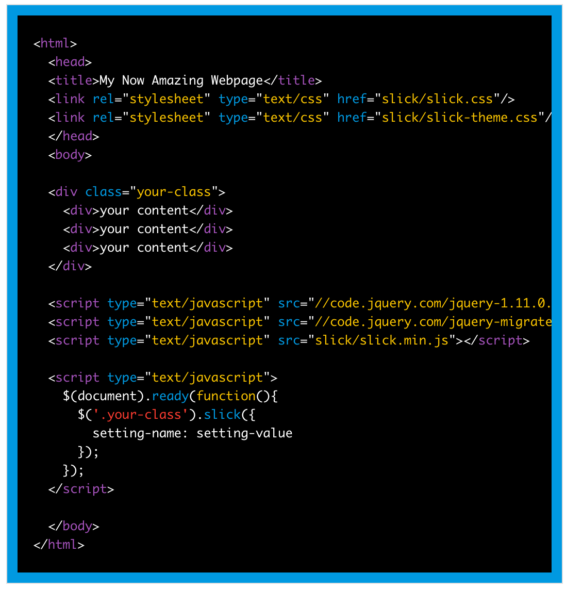

Slick
Slick has great documentation. Navigate to the "Get it Now" section and copy those URLs. Place the CSS in the head and the JS at the bottom of your page. Note that you may have to add https: before the "//"
Just add the markup like in their example:
1st Example: Hover to change me!
// 1st Example: Changing classes
// First declare our variable: in this example,
// this is both the target of the event AND the class change:
var $firstExample = $('#first-example');
// We can write the functions separately:
function whiteOnBlue() {
$firstExample.removeClass('black-on-white'); //remove first class
$firstExample.addClass('white-on-blue'); //add second
}
function blackOnWhite() {
$firstExample.addClass('black-on-white'); //same in reverse:
$firstExample.removeClass('white-on-blue');
}
// Hover can take 2 functions: 1st is for hover ON, second is for hover OFF:
$firstExample.hover(whiteOnBlack, blackOnWhite);